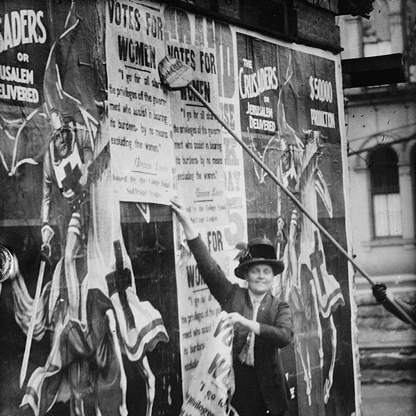
Suffragettes posting bills. [source]
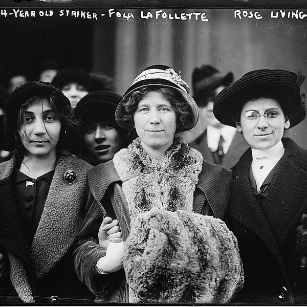
Suffrage and labor activist Flora Dodge "Fola" La Follette (1882-1970), social reformer and missionary Rose Livingston and a young striker during a garment strike in New York City in 1913. [source]
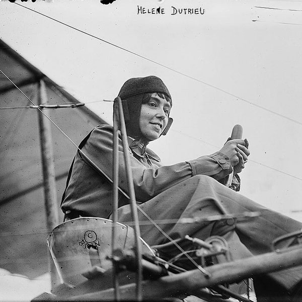
Helene Dutrieu (1877-1961), Belgian aviator, cyclist, hospital director and journalist. [source]
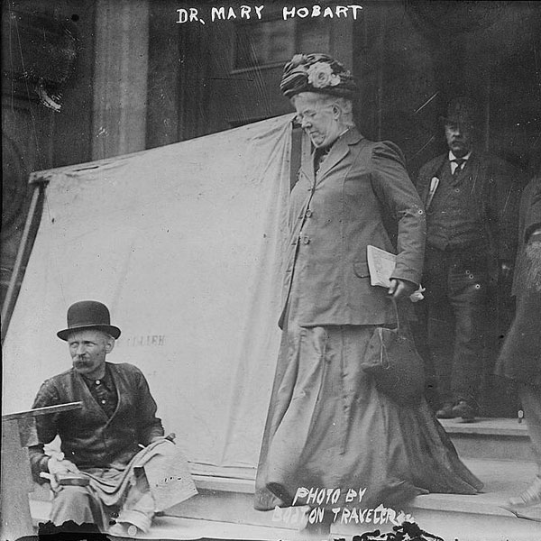
Dr. Mary Hobart. [source]
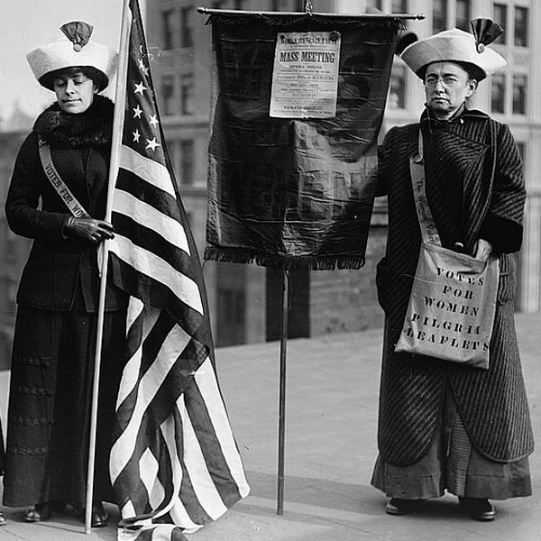
Women suffrage hikers General Rosalie Jones, Jessie Stubbs, and Colonel Ida Craft, who is wearing a bag labeled "Votes for Women pilgrim leaflets" and carrying a banner with a notice for a "Woman Suffrage Party. Mass meeting. Opera House. Brooklyn Academy of Music. January 9th at 8:15 pm". [source]
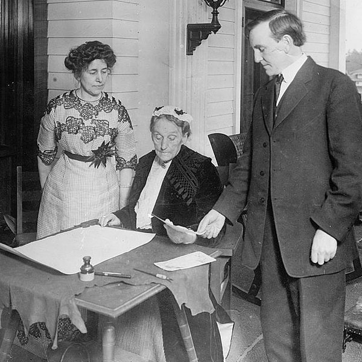
Abigail Scott Duniway signing Oregon's Equal Suffrage Proclamation on Nov. 30, 1912, while Governor Oswald West and Viola M. Coe look on. [source]
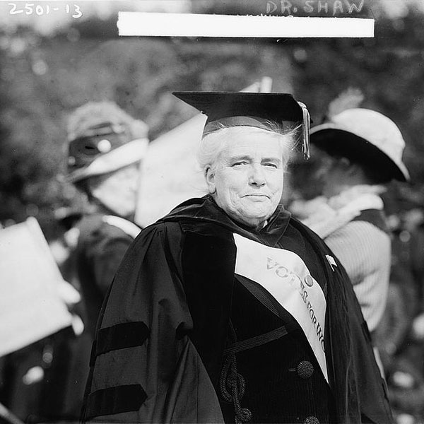
Reverend Doctor Anna Howard Shaw (1847 - 1919). A leader in the women's suffrage movement, Shaw was a master orator for social justice, and the first woman to be ordained by the Protestant Methodist Church. She was the first living American woman to be awarded the U.S. Distinguished Service Medal. [source]
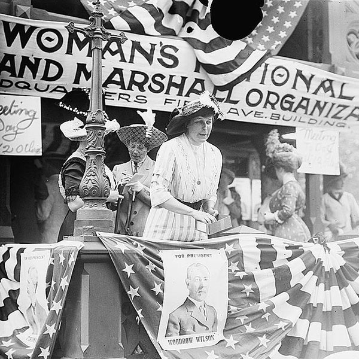
Florence Jaffray Hurst "Daisy" Harriman, chairman and founder of the Women's National Wilson and Marshall organization with banner in 1912. [source]
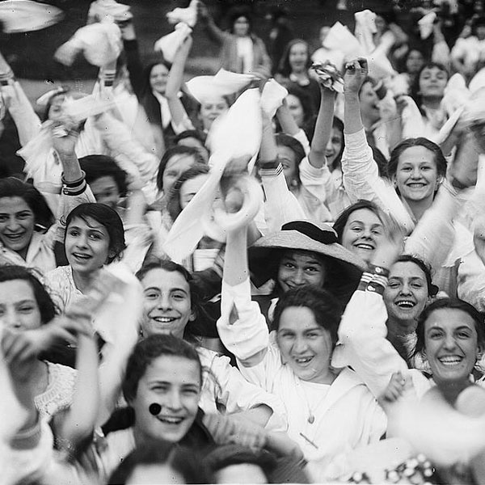
Public Schools Athletic League, 1912. [source]
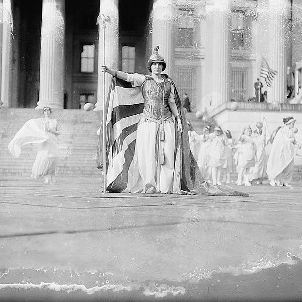
Hedwig Reicher as Columbia in Suffrage Pageant. Photo taken in front of the Treasury Building at the Woman Suffrage Parade in Washington, D.C., March 3, 1913. [source]
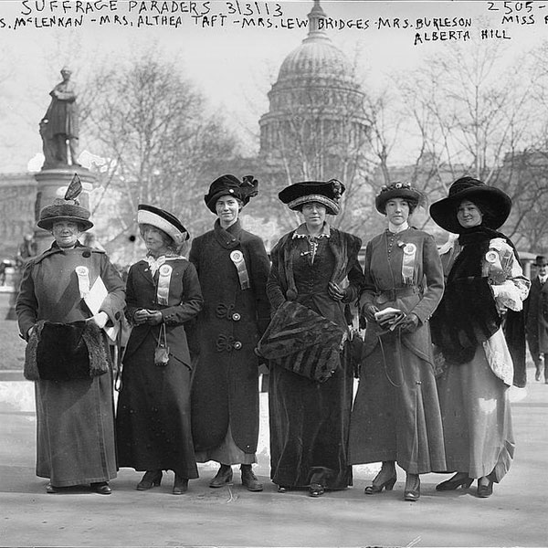
Photo taken at the National American Woman Suffrage Association parade held in Washington, D.C., March 3, 1913 showing (left to right) Mrs. Russell McLennan, Mrs. Althea Taft, Mrs. Lew Bridges, Mrs. Richard Coke Burleson, Alberta Hill and Miss F. Ragsdale. [source]
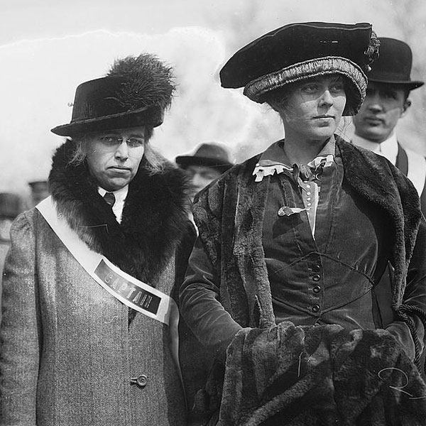
Suffrage parade with Mrs. W. Albert Wood and Mrs. R.S. Burleson, 1913 March 3. [source]